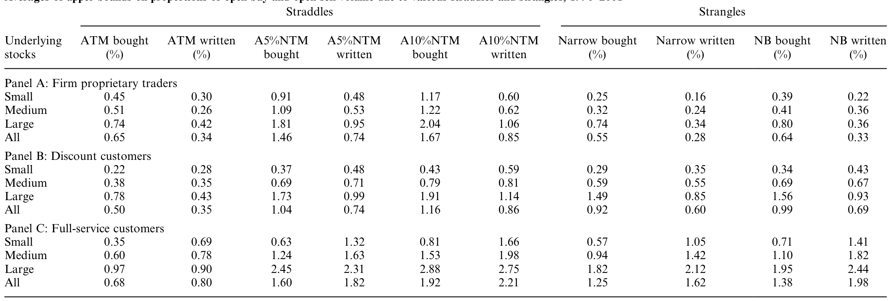
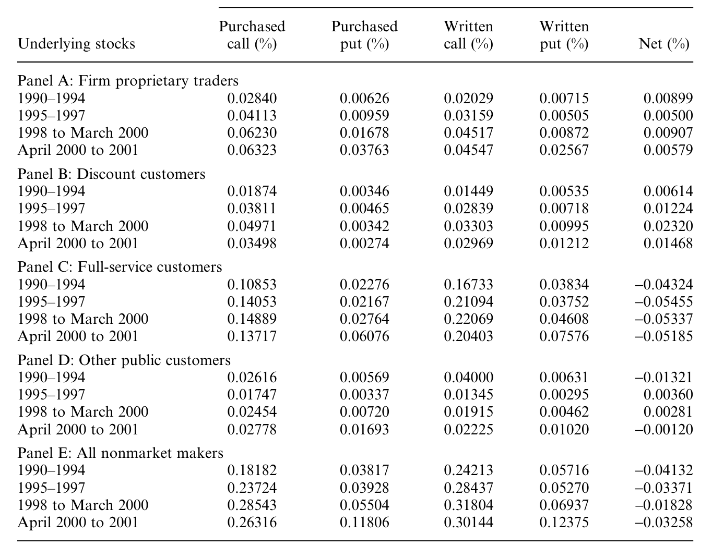
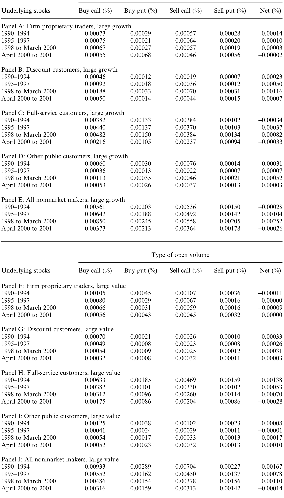
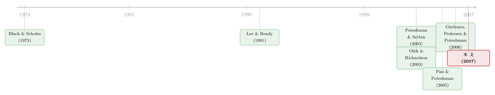

谁在真正交易期权？——一份藏在 CBOE 账本里的「行为」证据
本文读的是 Lakonishok, Lee, Pearson & Poteshman (2007, Review of Financial Studies)：他们用一份能按投资者类型拆开的独家 CBOE 数据，把「人们到底怎么交易期权」这件事第一次摊在桌面上。结论一再反直觉——卖期权比买期权更常见，教科书力推的波动率交易（跨式/宽跨式）只占很小一份额，最罕见的恰恰是「保护性看跌」；而在 1999–2000 的互联网泡沫里，数据集中最「不成熟」的折扣券商客户大举买入成长股看涨期权、卖出看跌期权，像是在给泡沫添柴。
1 一个被冷落了三十年的问题
1973 年，Black 和 Scholes 写下了那个后来人人会背的公式，Merton 紧随其后把它一般化。一夜之间，「期权该值多少钱」成了金融学里被研究得最透的问题之一——理论价格、对冲比率、隐含波动率，论文汗牛充栋。
可是，有一个同样基本、却被冷落了整整三十年的问题：人们到底是怎么交易期权的？
这听上去不像个「问题」。但你只要追问一句就会发现自己其实一无所知：在所有买入和卖出的期权背后，是谁在交易？他们是在押注方向，还是在对冲？是在赌波动率，还是在用期权绕开做空股票的种种限制？教科书会告诉你「保护性看跌 (protective put)」「跨式 (straddle)」这些策略多么经典，但真实世界里，这些策略到底占多大份额，从来没人数过。
原因很简单：没有数据。市面上常见的期权数据——伯克利期权数据库、CBOE 的 MDR 数据——只给你逐笔成交的时间戳和价量，既不告诉你交易者是谁，也不告诉你这笔成交是开新仓还是平旧仓，甚至连买还是卖都要靠 Lee and Ready (1991) 的算法去猜。
本文的第一个、也是最大的贡献，就是它手里那份独一无二的数据。
2 数据：一本能「点名」的账本
这份数据直接来自芝加哥期权交易所 (CBOE)，覆盖 1990 年初到 2001 年底所有挂牌个股期权的每日未平仓量 (open interest) 和成交量。它的不寻常之处有两点。
第一，它能区分持仓的方向。 期权清算公司 (OCC) 给每一笔成交打一个来源代码：F 是自营交易员 (firm proprietary traders)，C 是公众客户，M 是做市商 (market maker)。更妙的是，CBOE 的一位分析师进一步把公众客户拆成了三类：折扣券商客户 (discount customers)（比如 E-Trade 的散户）、全方位服务券商客户 (full-service customers)（比如美林的客户，对冲基金大多走这条通道）、以及其他公众客户。
第二，它能区分开仓与平仓、买与卖。 成交量被拆成四类：开新多仓的买单、开新空仓的卖单、平旧空仓的买单、平旧多仓的卖单。这意味着你能看到「开仓买入量 (open buy volume)」这种别处看不到的量——它干净地告诉你某类投资者主动建立了一个什么样的新头寸。
这两点合在一起，作者得以提出一个贯穿全文的判断：三类投资者的「成熟度」是有高低的。自营交易员最成熟（Poteshman and Serbin (2003) 证明他们几乎从不做非理性的提前行权），全方位服务客户居中（对冲基金在此），折扣券商客户最不成熟。后一点有独立证据支撑——Mahani and Poteshman (2005) 发现折扣客户偏爱在财报前重仓成长股期权，尽管财报日价值股反而大幅跑赢成长股 [La Porta et al. (1997)]。
记住这条「成熟度阶梯」，它是全文反转的引线。
3 怎么把期权头寸「翻译」成股票
在看结果之前，得先解决一个度量问题：一张行权价 130、delta 为 0.55 的看涨期权，和一张行权价 125、delta 为 0.60 的看涨期权，怎么加总才有意义？
作者的办法是把所有期权头寸做 delta 调整，折算成「等价的标的股数」，再除以流通股本，得到一个无量纲的百分比。对某只股票 s、某交易日 t、某类持仓 k（买入看涨/买入看跌/卖出看涨/卖出看跌）、某类投资者 i，定义：
一个例子能让它落地：1998 年 6 月 1 日，XYZ 有 23,000,000 股流通，自营交易员持有 120 张 6 月到期、行权价 130 的看涨（delta 0.55），和 35 张 7 月到期、行权价 125 的看涨（delta 0.60）。代入上式，他们的买入看涨未平仓量是流通盘的 0.0378%。
作者特别说明：delta 调整即便完全不做，主要结论也不变——所以不必纠结 Black-Scholes 在美式期权、随机波动率下的种种失真，它对这里的目的是够用的。成交量用完全平行的方式度量。
为什么用「占流通股的比例」而不是美元金额？因为前者基本不受股价涨跌的机械影响，而后者会被股价波动搅得面目全非。这是一个看似不起眼、却让全文的跨期比较变得干净的选择。
先说一个量级感：对大盘股，所有非做市商加总的未平仓量约为流通盘的 0.62%。看上去很小，但合约换手很快——年化期权换手对应约 7% 的标的股数；考虑到标的股票本身年换手约 60%，期权市场的活跃度其实相当可观。
4 第一个反转：卖期权的人，比买期权的人多
接着，一个自然的问题是——这 0.62% 里，到底是买的多还是卖的多？
直觉会说「买」。期权不就是用有限的钱去博一个不对称收益吗？教科书第一课讲的就是买看涨、买看跌。
数据给出的答案恰恰相反。看全样本所有非做市商（Table 1 的 Panel E）：买入看涨和卖出看涨未平仓量分别是 0.232% 和 0.282%，买入看跌和卖出看跌分别是 0.055% 和 0.072%。把看涨看跌合起来，卖出持仓 0.354% 比买入持仓 0.287% 高出约 23%。
这个「卖多于买」主要由全方位服务客户驱动——他们的头寸占了非做市商的大头。对他们，卖出看涨 0.198% 比买入看涨 0.132% 高出整整 50%，卖出看跌 0.048% 也比买入看跌 0.031% 高出略超 50%。只有最成熟的自营交易员是个例外：他们买入多于卖出，也是唯一一类买入看跌超过卖出看跌的投资者。
但真正出人意料的是买入看跌（purchased put）——它在四类持仓里是最罕见的一类。非做市商的买入看涨大约是买入看跌的 4 倍。
这为什么反直觉？因为几乎每一本给 MBA 和本科生写的衍生品教材，都把「保护性看跌」当成头号策略来讲（McDonald 2003 第 3 章里它就是第一个出场的）。而且做空股票又贵又难，按理说买看跌正是一条绕过这些麻烦的捷径。可现实里，买看跌偏偏最少有人问津。
与之镜像的另一面是卖出看跌（written put）的流行。作者翻遍手头的衍生品教材，只有 Ritchken (1996) 提了一句裸卖看跌是常见策略，只有 Stoll and Whaley (1993) 提到了「持股同时卖看跌」——而且是他们讨论的第 50 个、也就是最后一个策略。教科书里垫底的东西，数据里却名列前茅。
到这里，一个更尖锐的问题浮现出来：如果买看跌（赌跌或对冲）这么少，卖看跌（赌不跌）这么多，那期权市场到底在被用来对冲，还是被用来押方向？
5 第二个反转：几乎没人在用期权赌波动率
要回答上面那个问题，得先排除一个最经典的「非方向」动机：波动率交易。
教科书里，赌波动率的旗舰策略是跨式 (straddle) 和宽跨式 (strangle)——同时买入（或卖出）看涨和看跌，从而把对股价方向的暴露对冲掉，只留下对波动率的押注。MacDonald (2003) 专门有一节叫「Speculating on Volatility」。
作者设计了一套巧妙的办法，给跨式/宽跨式的使用频率定一个上界 (upper bound)：因为他们看不到账户层面的策略组合，只能从「一个投资者在同一标的上同时持有的看涨和看跌量」里，尽可能多地配对出可能的跨式/宽跨式，从而得到一个偏高的估计。
结果如下表所示：即便用这种「往多了算」的上界口径，波动率交易也只占期权活动的很小一部分。

Table 6: reports averages of the upper bounds on the proportions of
这个发现本身就值钱。它意味着，既然波动率交易不是期权活动的主要驱动力，那剩下的舞台就让给了对股价方向的押注与对冲。于是问题被逼到了墙角：方向性的那部分，是对冲，还是投机？
然后是第三块拼图。作者动用了另一份数据——某折扣券商一批账户的完整持仓——来看那些「卖出看涨」到底是不是裸的。答案是：很大一部分卖出看涨其实是备兑看涨 (covered call) 的一条腿（持股同时卖看涨）。但除了备兑看涨这一项，方向性对冲的份额其实很小：在卖出看涨之后，最常见的头寸是买入看涨和卖出看跌，而既有研究都表明做空股票的头寸少得可怜 [Dechow et al. (2001); Lamont and Stein (2004)]——这就意味着买看涨、卖看跌的人极少同时在做空股票，因而这些期权头寸几乎不可能是对冲。更进一步，那份补充数据显示，多数买入看跌是裸头寸，强烈暗示它们就是在赌股价会跌。
把三块拼图拼起来，结论清晰得让人意外：
除了备兑看涨，期权市场里几乎没有多少量能归因于「对冲」。这意味着绝大部分期权活动，是由对未来股价方向的看法驱动的——而这种看法，既可能来自正确的信息，也可能来自认知偏差等「行为」因素。
（关于「期权里的方向性押注究竟含不含信息」，这条线后来被反复挖掘，可参见《期权报价里，到底有没有「先知」？》与《期权里藏着的，不是先知，而是一张借券账单》。）
6 于是，泡沫成了一块天然的试金石
如果期权活动主要由「方向看法」驱动，那么一个自然的实验场，就是那场所有人都对方向有强烈看法的时期——1999 年到 2000 年初的互联网泡沫。
作者把样本切到泡沫期，按投资者类型和股票类型（成长 vs 价值）分别看。几个事实浮出水面：
第一，最不成熟的折扣客户全面「上头」。 泡沫期间，折扣客户的买入看涨、卖出看跌、以及通过期权市场获得的对标的的净正向暴露都急剧上升——而且这些变化几乎都集中在成长股而非价值股上。

Table 9: which presents the open interest by period and investor class from
第二，更成熟的投资者按兵不动。 与折扣客户形成鲜明对比，自营交易员和全方位服务客户没有增加开仓的买入看涨或卖出看跌，他们的买入看涨、卖出看跌未平仓量只有有限变化。

Table 10: contains for each investor group and each of the four sub-
第三，没有人去赌泡沫破裂。 整个泡沫期，任何一类投资者开仓买入看跌的量都没有上升。这一点尤其耐人寻味：买看跌本是赌下跌、做空泡沫最便捷的工具，可就连这条路也无人问津。
把成熟度阶梯接回来，故事就完整了：最不成熟的投资者在押注成长股会继续涨，他们的投机很可能给泡沫添了柴；而更成熟的投资者顶多是温和地跟一把多。
这给互联网泡沫提供了一个和 Ofek and Richardson (2003) 不同的视角。后者强调是卖空约束助长了泡沫、约束松动又刺破了泡沫。但本文指出：既然散户连「买看跌」这条不受卖空约束限制的看空捷径都懒得走，说明当时根本就没什么人有看空泡沫的胃口——问题或许不在「不能做空」，而在「没人想做空」。（关于「进入太多还是太少」的另一面争论，可参见《互联网泡沫，错不在「进得太多」，而在「进得太少」？》。）
顺带一个被脚注藏起来的漂亮推论：既然客户整体上「卖期权多于买期权」，那做市商整体上就必然是净买入看跌、净买入期权的一方。这说明，如果当时真有大量散户想买看跌来做空泡沫，做市商为了平衡库存，几乎一定乐意卖给他们。看空的「供给」一直在，缺的是「需求」。
补充一句方法上的收尾：作者还用 Tobit 回归把买入/卖出看涨/看跌成交量对标的的过去收益、账面市值比 (book-to-market, BM)、波动率、是否分红做了回归，发现期权活动总体上与更高的过去收益、更低的 BM、更高的波动率相关——这与「散户追涨、偏爱波动大的成长股」的图景一致。
7 文献脉络
把镜头拉远，这篇论文坐在一条很清晰的研究脉络上。
源头是定价。 Black and Scholes (1973) 与 Merton (1973) 把随机分析引入期权定价，开启了三十年的「如何给期权标价」的研究洪流。但正如本文开篇所言，定价的繁荣反衬出交易行为研究的贫瘠。
中间的瓶颈是数据。 在没有投资者身份信息的年代，人们只能用 Lee and Ready (1991) 的算法去推断成交方向，做不了精细的行为刻画。
转折来自一组用同一份 CBOE 独家数据展开的论文。 Poteshman and Serbin (2003) 用它证明了不同投资者在提前行权上的「（非）理性」差异，从而给「成熟度阶梯」奠了基；Pan and Poteshman (2005) 发现期权成交量里含有对未来股价的信息，且全方位服务客户比折扣客户更「先知」；Gârleanu, Pedersen and Poteshman (2006) 则从需求出发给期权定价，把「谁在买、谁在卖」直接写进了价格。

本文所处的位置，是这条脉络里最「描述性」、却也最基础的一块拼图：它不急于建模或检验某个定价假说，而是先把「不同投资者到底持有什么、交易什么」这套基本事实老老实实地数清楚——并在数的过程中，撞出了一连串与教科书相悖的反直觉事实，又顺势给互联网泡沫提供了一份微观证据。后来关于散户期权需求如何扭曲波动率曲面的研究（可参见《当波动率曲面被「散户」推歪：从券商宕机里读出的需求压力》与《情绪会给「微笑」加多少弧度？——把投资者情绪写进期权价格》），某种程度上都站在本文铺好的「事实地基」上。
8 评论与延伸（Q&A + 研究方向）
(a) 几个可能的疑问
Q：这只是一篇「描述性统计」论文，凭什么发 RFS？
因为在它之前，这些「基本事实」根本不存在。一篇论文的价值不只在于精巧的识别，也在于它是否第一次让一类现象变得可见。本文用一份谁也没有的数据，推翻了几条被教科书当作常识的判断（保护性看跌很重要、波动率交易很常见），这本身就是稀缺的实证贡献。
Q：「卖出看跌比买入看跌多」会不会只是做市商口径或数据假象？
不太可能。作者明确把做市商（
M代码）剔除，只看非做市商客户，而且结论在四类投资者中分别成立，差异在 1% 水平上对均值的 t 检验和对中位数的 Wilcoxon 符号秩检验都显著。这是真实客户行为，不是清算口径的副产品。
Q：把所有期权用 Black-Scholes delta 折算，会不会因为模型误设而带偏结论？
作者直接回应了这一点：即便完全不做 delta 调整，主要结论也不变。换言之，结论靠的是「买卖、看涨看跌、开平仓」这些一阶的方向事实，而不是 delta 的精确数值——模型误设最多影响量级的小数点，动不了定性结论。
Q：「波动率交易只占小份额」是不是被上界口径低估了，反而显得更少？
恰恰相反。上界是「往多了算」——把同一标的上能配对的看涨看跌尽量都算成跨式/宽跨式。一个偏高的估计都只得到很小的份额，意味着真实份额只会更小。这让结论更有说服力，而非更弱。
Q：泡沫期散户大买成长股看涨，能算「散户吹大了泡沫」的因果证据吗？
不能下因果断言，作者也很克制，只说散户的投机「可能（may have）贡献了泡沫」。数据是相关性的：散户在泡沫期增持了成长股的看涨暴露。它更像是给「行为驱动泡沫」假说提供了一块一致的微观拼图，而非一个干净的因果识别。
Q：本文和 Ofek-Richardson、Battalio-Schultz 到底分歧在哪？
层次不同。Ofek and Richardson (2003) 谈的是「卖空约束如何成就并刺破泡沫」；Battalio and Schultz (2005) 问的是「投资者本可以怎样用期权做空泡沫」。本文问的是「投资者实际上怎么交易了」——答案是几乎没人去买看跌做空，从而把矛头从「不能做空」转向了「没人想做空」。
(b) 几个可能的研究问题与提案
1. 把这套「投资者类型 × 开平仓 × 买卖」的镜头搬到信用衍生品市场。 【经济故事】期权市场的核心发现是「卖保险（写期权）比买保险更普遍，且最不成熟的人在错误的时点加仓」。CDS 本质也是一份违约「保单」，写 CDS = 卖保险。在信用周期的繁荣末期，是不是也存在「最不成熟的卖方在错误时点大举卖出保护」的镜像？ 【可行性】中。难点在于 CDS 缺少类似 CBOE 的「投资者身份 + 开平仓」标签；DTCC 的交易仓库数据有交易对手类别但获取受限。识别上可借鉴本文「按成熟度分组 + 周期切片」的设计。
2. 外资持有人在新兴市场股指期权里是「卖保险」还是「买保险」？ 【经济故事】本文揭示了客户整体净卖出看跌、做市商净买入看跌的结构。如果把投资者维度换成「本地 vs 外资」，外资在危机前后是承担尾部风险（卖看跌赚权利金）还是购买尾部保险（买看跌避险）？这直接关系到危机中谁是稳定器、谁是放大器。 【可行性】中。需要交易所提供按本地/外资拆分的期权持仓（部分亚洲交易所如 KRX、TAIFEX 公布期货期权的投资者类别），识别可用汇率/资本管制事件做准自然实验。
3. 公司债市场里的「方向押注 vs 对冲」分解。 【经济故事】本文用「补充账户数据 + 裸头寸比例」把方向押注从对冲里剥离出来。债券基金用 CDS 时，到底是在对冲组合久期/信用风险，还是在裸赌某个发行人？这决定了我们该把基金的 CDS 头寸读成「保险」还是「杠杆」。 【可行性】高。基金 N-PORT/N-Q 持仓 + 同发行人的债券持仓可以配对，凡「持债 + 买 CDS」算对冲，凡「无债 + 卖/买 CDS」算方向押注，思路与本文备兑看涨的识别同构。（与《危机里谁在「逆向接盘」？——债券基金、信用违约互换与一笔藏着风险的流动性溢价》的问题相邻。）
4. 「成熟度阶梯」在零佣金时代是否被重排？ 【经济故事】本文写于 1990–2001，折扣客户=最不成熟。但 2019 年后零佣金 + 散户期权热潮，可能让「折扣/散户」这一类的构成和行为都变了。今天的散户是更天真，还是已经学会了备兑/价差？ 【可行性】高。OCC 仍按 customer/firm/market-maker 分类，部分券商（如 Robinhood 时代）的聚合数据可得；可对照本文的口径做一次「跨二十年」的复刻，识别上用 2020 散户潮做断点。
9 我的判断
这篇论文的贡献，是那种「事后看理所当然、事前却无人能做」的贡献：它用一份独家数据，把「人们怎么交易期权」从一片空白变成了一组扎实、可被后人站立其上的事实，并在过程中接连推翻了教科书的几条想当然——保护性看跌很重要（错，它最罕见）、波动率交易很普遍（错，只占小份额）、对冲是主要动机（错，除备兑看涨外几乎可忽略）。仅这几条「祛魅」，就足够有价值。
对识别的担忧也很诚实地摆在台面上。其一，这本质是描述性的，泡沫一节的因果味道最浓、证据却最弱——「散户投机可能助推了泡沫」始终只是相关性。其二，「成熟度阶梯」的三档划分虽有 Poteshman-Serbin 等独立证据支撑，但「折扣客户=最不成熟」毕竟是个粗粒度标签，组内异质性可能很大。其三，跨式/宽跨式的「上界」虽然方向稳健，却无法告诉我们真实份额究竟是 1% 还是 5%，对「波动率交易到底有多边缘」只能给出定性结论。
我最想看到的后续，是把这套「身份 × 开平仓 × 买卖」的显微镜，对准做市商被迫承接的那一侧：既然客户系统性地卖期权、做市商系统性地接下，那么做市商的库存压力如何传导到隐含波动率曲面、又如何随情绪和泡沫起落——这恰恰是 Gârleanu, Pedersen and Poteshman (2006) 需求型定价的实证延长线。本文把「需求长什么样」数清楚了；下一步，是把「这份需求值多少钱」算出来。
参考文献
- Battalio, R., and P. Schultz (2005). Options and the Bubble. Journal of Finance (forthcoming).
- Black, F., and M. Scholes (1973). The Pricing of Options and Corporate Liabilities. Journal of Political Economy 81(3), 637–659.
- Dechow, P. M., A. P. Hutton, L. Meulbroek, and R. Sloan (2001). Short-Sellers, Fundamental Analysis, and Stock Returns. Journal of Financial Economics 61(1), 77–106.
- Gârleanu, N., L. H. Pedersen, and A. M. Poteshman (2006). Demand-Based Option Pricing. Working Paper, University of Illinois at Urbana-Champaign.
- Lakonishok, J., I. Lee, N. D. Pearson, and A. M. Poteshman (2007). Option Market Activity. Review of Financial Studies 20(3), 813–857.
- Lamont, O. A., and J. C. Stein (2004). Aggregate Short Interest and Market Valuations. American Economic Review 94(2), 29–32.
- La Porta, R., J. Lakonishok, A. Shleifer, and R. Vishny (1997). Good News for Value Stocks: Further Evidence on Market Efficiency. Journal of Finance 52(2), 859–874.
- Lee, C. M. C., and M. J. Ready (1991). Inferring Trade Direction from Intraday Data. Journal of Finance 46(2), 733–746.
- MacDonald, R. L. (2003). Derivatives Markets. Addison Wesley.
- Mahani, R. S., and A. M. Poteshman (2005). Overreaction to Stock Market News and Misevaluation of Stock Prices by Unsophisticated Investors: Evidence from the Option Market. Working Paper, University of Illinois at Urbana-Champaign.
- Merton, R. C. (1973). Theory of Rational Option Pricing. Bell Journal of Economics and Management Science 4(1), 141–183.
- Ofek, E., and M. Richardson (2003). DotCom Mania: The Rise and Fall of Internet Stock Prices. Journal of Finance 58(3), 1113–1137.
- Pan, J., and A. M. Poteshman (2005). The Information in Option Volume for Future Stock Prices. Review of Financial Studies (forthcoming).
- Poteshman, A. M., and V. Serbin (2003). Clearly Irrational Financial Market Behavior: Evidence from the Early Exercise of Exchange Traded Stock Options. Journal of Finance 58(1), 37–70.
- Ritchken, P. (1996). Derivatives Markets: Theory, Strategy, and Applications. HarperCollins.
- Stoll, H., and R. Whaley (1993). Futures and Options: Theory and Applications. Southwestern Publishing.